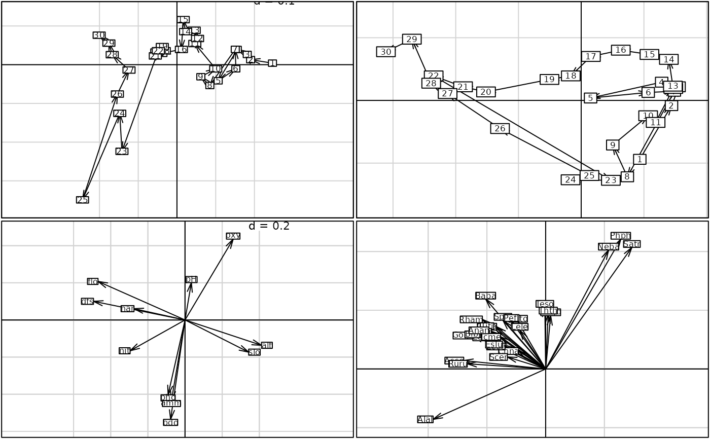

Simple Procruste Rotation between two sets of points
procuste.Rdperforms a simple procruste rotation between two sets of points.
Arguments
- dfX, dfY
two data frames with the same rows
- scale
a logical value indicating whether a transformation by the Gower's scaling (1971) should be applied
- nf
an integer indicating the number of kept axes
- tol
a tolerance threshold to test whether the distance matrix is Euclidean : an eigenvalue is considered positive if it is larger than
-tol*lambda1wherelambda1is the largest eigenvalue.
Value
returns a list of the class procuste with 9 components
- d
a numeric vector of the singular values
- rank
an integer indicating the rank of the crossed matrix
- nf
an integer indicating the number of kept axes
- tabX
a data frame with the array X, possibly scaled
- tabY
a data frame with the array Y, possibly scaled
- rotX
a data frame with the result of the rotation from array X to array Y
- rotY
a data frame with the result of the rotation from array Y to array X
- loadX
a data frame with the loadings of array X
- loadY
a data frame with the loadings of array Y
- scorX
a data frame with the scores of array X
- scorY
a data frame with the scores of array Y
- call
a call order of the analysis
Author
Daniel Chessel
Anne-Béatrice Dufour anne-beatrice.dufour@univ-lyon1.fr
References
Digby, P. G. N. and Kempton, R. A. (1987) Multivariate Analysis of Ecological Communities. Population and Community Biology Series, Chapman and Hall, London.
Gower, J.C. (1971) Statistical methods of comparing different multivariate analyses of the same data. In Mathematics in the archaeological and historical sciences, Hodson, F.R, Kendall, D.G. & Tautu, P. (Eds.) University Press, Edinburgh, 138–149.
Schönemann, P.H. (1968) On two-sided Procustes problems. Psychometrika, 33, 19–34.
Torre, F. and Chessel, D. (1994) Co-structure de deux tableaux totalement appariés. Revue de Statistique Appliquée, 43, 109–121.
Dray, S., Chessel, D. and Thioulouse, J. (2003) Procustean co-inertia analysis for the linking of multivariate datasets. Ecoscience, 10, 1, 110-119.
Examples
data(macaca)
pro1 <- procuste(macaca$xy1, macaca$xy2, scal = FALSE)
pro2 <- procuste(macaca$xy1, macaca$xy2)
if(adegraphicsLoaded()) {
g1 <- s.match(pro1$tabX, pro1$rotY, plab.cex = 0.7, plot = FALSE)
g2 <- s.match(pro1$tabY, pro1$rotX, plab.cex = 0.7, plot = FALSE)
g3 <- s.match(pro2$tabX, pro2$rotY, plab.cex = 0.7, plot = FALSE)
g4 <- s.match(pro2$tabY, pro2$rotX, plab.cex = 0.7, plot = FALSE)
G <- ADEgS(list(g1, g2, g3, g4), layout = c(2, 2))
} else {
par(mfrow = c(2, 2))
s.match(pro1$tabX, pro1$rotY, clab = 0.7)
s.match(pro1$tabY, pro1$rotX, clab = 0.7)
s.match(pro2$tabX, pro2$rotY, clab = 0.7)
s.match(pro2$tabY, pro2$rotX, clab = 0.7)
par(mfrow = c(1,1))
}
data(doubs)
pca1 <- dudi.pca(doubs$env, scal = TRUE, scann = FALSE)
pca2 <- dudi.pca(doubs$fish, scal = FALSE, scann = FALSE)
pro3 <- procuste(pca1$tab, pca2$tab, nf = 2)
if(adegraphicsLoaded()) {
g11 <- s.traject(pro3$scorX, plab.cex = 0, plot = FALSE)
g12 <- s.label(pro3$scorX, plab.cex = 0.8, plot = FALSE)
g1 <- superpose(g11, g12)
g21 <- s.traject(pro3$scorY, plab.cex = 0, plot = FALSE)
g22 <- s.label(pro3$scorY, plab.cex = 0.8, plot = FALSE)
g2 <- superpose(g21, g22)
g3 <- s.arrow(pro3$loadX, plab.cex = 0.75, plot = FALSE)
g4 <- s.arrow(pro3$loadY, plab.cex = 0.75, plot = FALSE)
G <- ADEgS(list(g1, g2, g3, g4), layout = c(2, 2))
} else {
par(mfrow = c(2, 2))
s.traject(pro3$scorX, clab = 0)
s.label(pro3$scorX, clab = 0.8, add.p = TRUE)
s.traject(pro3$scorY, clab = 0)
s.label(pro3$scorY, clab = 0.8, add.p = TRUE)
s.arrow(pro3$loadX, clab = 0.75)
s.arrow(pro3$loadY, clab = 0.75)
par(mfrow = c(1, 1))
}

plot(pro3)
#> Error in s.arrow(dfxy = pro3$loadX, xax = 1, yax = 2, plot = FALSE, storeData = TRUE, pos = -3, psub = list(text = "X loadings"), plabels = list( cex = 1.25)): non convenient selection for dfxy (can not be converted to dataframe)
randtest(pro3)
#> Monte-Carlo test
#> Call: procuste.randtest(df1 = df1, df2 = df2, nrepet = nrepet)
#>
#> Observation: 0.6562
#>
#> Based on 999 replicates
#> Simulated p-value: 0.001
#> Alternative hypothesis: greater
#>
#> Std.Obs Expectation Variance
#> 6.746043740 0.342170480 0.002166918
data(fruits)
plot(procuste(scalewt(fruits$jug), scalewt(fruits$var)))